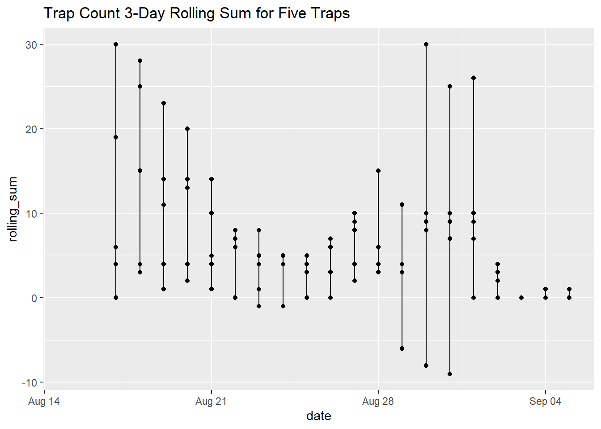
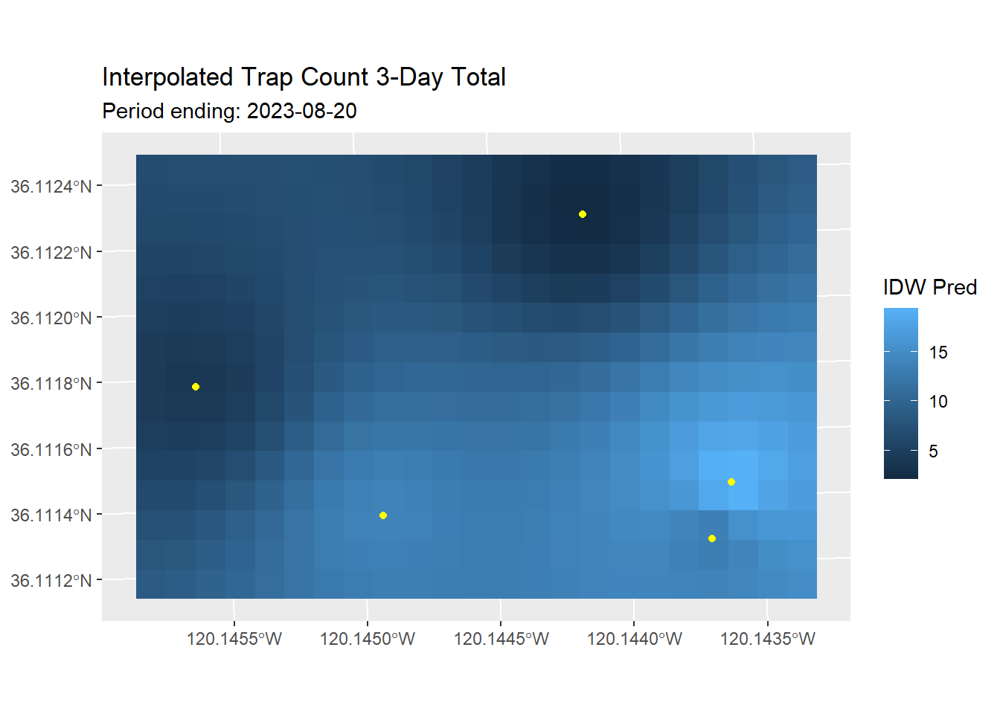

Trap Count Time Series Interpolation
Exploration of the Data and Methology
1 Overview
The goal of this notebook is to explore how we can interpolate the count data from the AgVantage smart traps, including data cleaning, temporal binning, and interpolation approaches. This notebook is intended to develop the code for these steps, rather than meaningful outputs.
This notebook builds upon the data cleaning steps developed in Exploring Heatmaps
1.1 Load Packages
1.2 Load the most recent data
These CSV files can be downloaded from Google Drive and S3. Ask Andy if you need access.
trapcounts_csvfn <- here("./csvs/trapcounts.csv"); file.exists(trapcounts_csvfn)[1] TRUEtrapcounts_tbl <- read_csv(trapcounts_csvfn)Rows: 1377 Columns: 6
── Column specification ────────────────────────────────────────────────────────
Delimiter: ","
chr (3): species, imgurl, imgfn
dbl (2): device_id, count
date (1): date
ℹ Use `spec()` to retrieve the full column specification for this data.
ℹ Specify the column types or set `show_col_types = FALSE` to quiet this message.trapcounts_tbl |> head()1.3 Clean and reformat the data
For this exercise, we will work with 3-weeks of data from August and September 2023 (as of today, this is the only time period where we have a mostly-complete data for five traps).
Define the devices we want to use:
my_device_ids <- c(1378, 1577, 1627, 1628, 1629)Define the start and end dates:
Define the dates when the papers were reset:
Clean and reformat the data including:
- filtering by trap id and date
- filling in missing dates with
NAs
- compute the new observations per day
new_obs_tbl <- trapcounts_tbl |>
filter(device_id %in% my_device_ids, date >= start_dt, date <= end_dt) |>
select(device_id, date, count) |>
complete(date = all_dates_dt, device_id = my_device_ids, fill = list(count = NA)) |>
arrange(device_id, date) |>
mutate(yesterdays_count = lag(count, 1),
subtract_out = if_else(date %in% (reset_count_dt + 1), 0, yesterdays_count),
new_obs = count - subtract_out)
head(new_obs_tbl)View the data in DT:
new_obs_tbl |>
mutate(device_id = as.factor(as.character(device_id))) |>
select(device_id, date, count, subtract_out, new_obs) |>
datatable(filter = "top",
rownames = FALSE,
options = list(autoWidth = TRUE,
pageLenth = 30))2 Exploratory Analysis
First we apply an assumption that missing values (NAs) should be replaced with zeros (i.e., on days with missing data, we assume no new moths were observed). We also flag those rows where a missing value has been replaced by a zero.
new_obs_na2zero_tbl <- new_obs_tbl |>
mutate(na2zero = is.na(new_obs)) |>
replace_na(list(new_obs = 0)) |>
select(device_id, date, count, subtract_out, new_obs, na2zero)
head(new_obs_na2zero_tbl)It wouldn’t be unreasonable to fill in missing values with a linear interpolation of the previous and next data points, unless of course the sticky papers were changed during the period.
2.1 Plot the ‘new observations’
ggplot(new_obs_na2zero_tbl, mapping = aes(x = date, y = new_obs)) +
geom_col() +
facet_grid(vars(device_id))The days where we see negative “new observations” warrant further investigation. These seem to be on days when the sticky papers were changed out, and the rule applied above for ‘resetting’ the old count doesn’t work. I speculate that the sticky papers were changed before the image was taken, as opposed to after (or vice-versa). For future reference field staff should also record the time when the sticky papers were replaced, so we know which day to “zero out”.
Smooth the data a bit by creating a running sum (of the last 3 days) for each device_id:
Plot the rolling sum as separate series:
ggplot(new_obs_na2zero2_tbl, mapping = aes(x = date, y = new_obs)) +
geom_line() +
geom_line(mapping = aes(x = date, y = rolling_sum), col = "darkgreen") +
facet_grid(vars(device_id))Warning: Removed 2 rows containing missing values (`geom_line()`).
Plot the rolling sum all together:
new_obs_na2zero2_range_tbl <- new_obs_na2zero2_tbl |>
group_by(date) |>
summarise(rolling_sum_min = min(rolling_sum),
rolling_sum_max = max(rolling_sum),
.groups = "drop")
ggplot(new_obs_na2zero2_tbl, mapping = aes(x = date, y = rolling_sum)) +
geom_point() +
geom_segment(data = new_obs_na2zero2_range_tbl,
mapping = aes(x = date, xend = date,
y = rolling_sum_min, yend = rolling_sum_max)) +
labs(title = "Trap Count 3-Day Rolling Sum for Five Traps")Warning: Removed 10 rows containing missing values (`geom_point()`).Warning: Removed 2 rows containing missing values (`geom_segment()`).
2.2 Join the count data to the location data
To create an interpolation, we have to first join the count data to the trap locations.
devices_csvfn <- here("./csvs/devices.csv"); file.exists(devices_csvfn)[1] TRUEdevices_tbl <- read_csv(devices_csvfn)Rows: 11 Columns: 6
── Column specification ────────────────────────────────────────────────────────
Delimiter: ","
chr (3): device_name, ranch, pheromone
dbl (3): device_id, lon, lat
ℹ Use `spec()` to retrieve the full column specification for this data.
ℹ Specify the column types or set `show_col_types = FALSE` to quiet this message.devices_tbl |> head()Next, we convert the trap locations to a sf object. While we’re at it, we’ll project them in to UTM Zone 10, because very soon we’ll want to define a raster that covers the area.
utm10n_wgs84_epsg <- 32610
devices_sf <- devices_tbl |>
filter(device_id %in% my_device_ids) |>
select(device_id, device_name, lon, lat) |>
st_as_sf(coords = c("lon", "lat"), crs = 4326) |>
st_transform(utm10n_wgs84_epsg)
devices_sfPlot to make sure they look ok
2.3 Define the spatial extent of interpolation
The first step in interpolation is to decide how large of an area to interpolate over. We’ll use the bounding box of the trap locations, plus a 20m buffer. We’ll use stars::st_as_stars(), which can accept a bbox object.
tc_intrp_ext_stars <- st_bbox(devices_sf) |>
st_as_sfc() |>
st_buffer(dist = 20) |>
st_as_stars(dx = 10)
tc_intrp_ext_starsstars object with 2 dimensions and 1 attribute
attribute(s):
Min. 1st Qu. Median Mean 3rd Qu. Max.
values 0 1 1 0.9449275 1 1
dimension(s):
from to offset delta refsys x/y
x 1 23 756908 10 WGS 84 / UTM zone 10N [x]
y 1 15 4e+06 -10 WGS 84 / UTM zone 10N [y]2.4 Interpolate Rolling Sum for One Day
Get Count Data for One Day
Join the devices spatial layer to the cumulative 3-day count for a single day:
oneday_dt <- as.Date("2023-08-20")
oneday_sf <- devices_sf |>
select(!device_name) |>
left_join(new_obs_na2zero2_tbl |>
filter(date == oneday_dt) |>
select(device_id, date, rolling_sum),
by = "device_id")
oneday_sfPlot to see how it looks:
IDW
Perhaps the simplest interpolation method is inverse distance weighted interpolation, which is a weighted average, using weights inverse proportional to distances from the interpolation location.
tc_intrp_stars <- idw(rolling_sum~1, oneday_sf, tc_intrp_ext_stars)[inverse distance weighted interpolation]tc_intrp_starsstars object with 2 dimensions and 2 attributes
attribute(s):
Min. 1st Qu. Median Mean 3rd Qu. Max. NA's
var1.pred 2.134324 6.602429 9.312279 9.749797 13.26887 19.4613 0
var1.var NA NA NA NaN NA NA 345
dimension(s):
from to offset delta refsys x/y
x 1 23 756908 10 WGS 84 / UTM zone 10N [x]
y 1 15 4e+06 -10 WGS 84 / UTM zone 10N [y]Plot:
ggplot() + geom_stars(data = tc_intrp_stars,
aes(fill = var1.pred, x = x, y = y)) +
geom_sf(data = oneday_sf, col = "yellow") +
labs(title = "Interpolated Trap Count 3-Day Total",
subtitle = paste0("Period ending: ", oneday_dt),
fill = "IDW Pred") +
xlab(NULL) + ylab(NULL) 
3 Animate the Interpolated Surfaces
Next, we will create an animation of the interpolated rasters.
Option 1: loop thru the above steps, save the ggplots as PNG files, and combine with gifski
Option 2: create the interpolated rasters in a single 3-dimensional stars objects, and the create the animated plot with gganimate ==> try this first, also lends itself to visualization in Shiny
Option 3: instead of an animated GIF, create an MP4 that someone can scrub thru